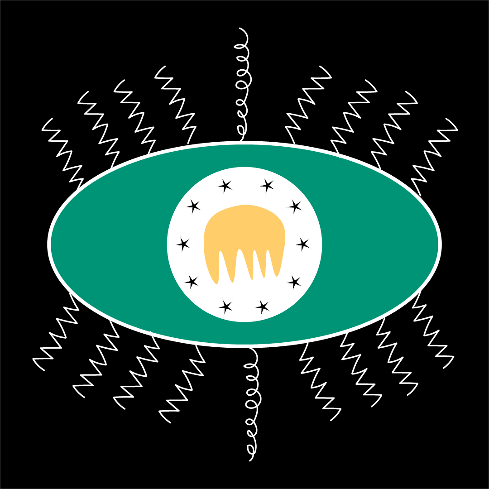
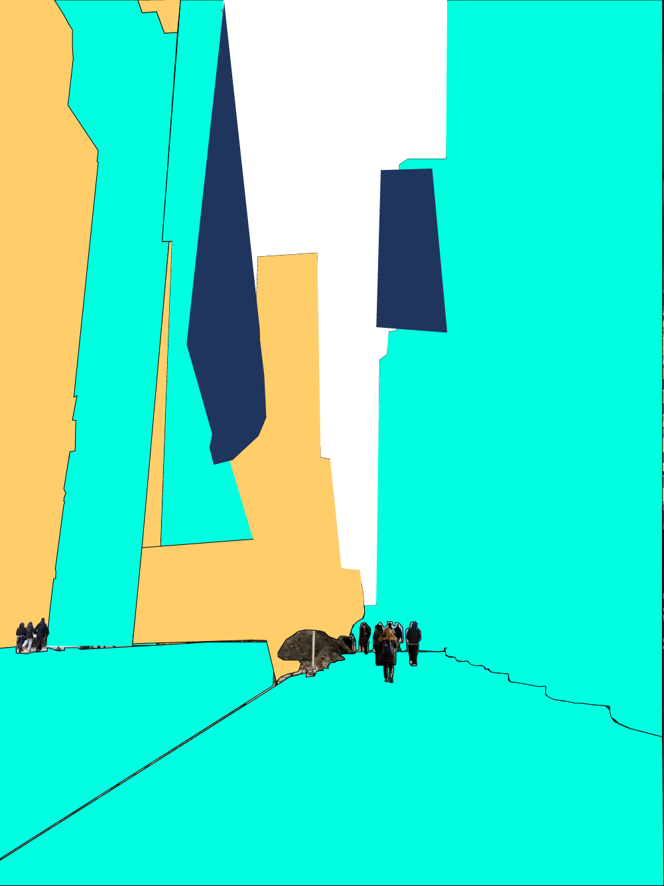

First the image that you are seeing is a dog that I took a picture of from Saudi Arabia. The other images like the galaxy image, the moustache, and the chefs has is from a site that lended me copyright free images. I opened Adobe Photoshop and created a project using an outer space background image. After that, I opened the photo I took of the dog from Saudi Arabia in a separate file like I masked it. By using the selection tool, I carefully outlined the dog and applied a layer mask to remove the original background. Then I had to isolate only the dog without deleting any important details apart from the dog. Once the dog was fully masked, I copied and pasted it onto the outer space background. I adjusted the size and position so the dog fit naturally into the scene which is what you see to the left.
Next, I added the chef’s hat and the pink moustache to give the dog more personality. I opened each image in photoshop with the other images, just like I did with the dog photo. I used the selection and masking tools again to remove their backgrounds and keep only the objects. Then, I copied and pasted both the hat and the moustache onto the main project with the space background. I resized and positioned the hat on top of the dog’s head and placed the pink moustache under the nose. Finally, I added a bubble or chat with text on the right side that describes the dog as an Arabian doggie chef from Saudi Arabia, completing the picture I wanted to make. This took me 4 images to create in Adobe Photoshop and I carefully tried blending the colors so nothing looks choppy.

Above is an eye that I have created in Adobe Illustrate and it looks very weird I know. The theme I was going for was an alien droopy yolk eye with curly eyelashes and stars on the sclera. This would give a dystopian or alien happy and funny emotion to the audience that are viewing it.

In the image above, what I have done is that I have taken a picture of 59th street where there are multiple buildings to my left, my right, and in front of me. I got kinda lazy and did not do every single detail as it was going to take me forever but I did the most part of highlighting the street, the sidewalk, and the buildings. I made them a different color and made a collage and to me it looks really nice. Even though I did not get to the nitty gritty I still tried my best to do as much as I could. To do the outlines I have basically used the pen tool that I could set anchors with and make shapes to my liking. I could say that I definitely got more comfortable with it over time and I can do it much nicer next time.